Setting the Input Voltage Range for the Eaton 9SX2000 UPS
What is Affected
When a UPS overload or internal failure occurs, the attached equipment is transferred to utility power (bypass mode). However, the utility power continues to be passively filtered, provided that it meets the bypass high and low limits set for the unit.
The voltage specification for the Panther System is 90–253V. In order to meet this specification in different regions where the Panther System is used, the bypass high and low limit voltages on the Panther System UPS must be configured according to the settings in the following table.
| UPS Version |
Input Voltage Observed (Step 2b) |
Output Voltage |
Bypass Low Limit % Setting (Step 4d) |
Bypass Low Limit Voltage Cutoff | Bypass High Limit % Setting (Step 4f) |
Bypass High Limit Voltage Cutoff |
|---|---|---|---|---|---|---|
|
North America
|
90–105 | 100 | -10% | 90 | 15% | 115 |
| 106–115 | 110 | -15% | 93.5 | 15% | 126.5 | |
| 116–123 | 120 | -15% | 102 | 15% | 138 | |
| 124–135 | 127 | -15% | 107.95 | 15% | 146.05 | |
|
International
|
180–205 | 200 | -15% | 170 | 15% | 230 |
| 206–215 | 208 | -15% | 176.8 | 15% | 239.2 | |
| 216–225 | 220 | -15% | 187 | 15% | 253 | |
| 226–235 | 230 | -15% | 207 | 10% | 253 | |
| 236–250 | 240 | -15% | 216 | 5% | 252 |
Parts and Materials Required
- Eaton 9SX2000 UPS for 120V (North America)
OR
- Eaton 9SX2000G UPS for 220V (International)
-
EATON Powerware 9SX UPS, 110V
-
EATON Powerware 9SX UPS, 220V
OR
OR
Procedure

|
Note—
ALL Fusion Installs require the Output Voltage on the UPS to be set at 220V. |
- Ensure the UPS is installed and powered on, with the correct power cord for the country of installation.
Note—Although the cords for some countries may physically fit into the sockets of other countries, the wrong cord will generate wiring fault alarms. To avoid this issue, ensure that the correct cord is used. Note—To Access the Main Menu on the UPS, press ⤶ until the EATON logo displays on the screen. - Input Voltage Observed by the UPS (i.e., voltage supplied from the wall socket):
- Highlight Measurements on the Main Menu using the up and down arrow buttons, and press the ⤶ button.
 Press the ↓ button to highlight Input/Output on the screen and press the ⤶ button.
Press the ↓ button to highlight Input/Output on the screen and press the ⤶ button.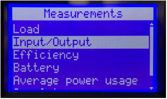
- Refer to the Input Voltage Observed column in the table above to determine the appropriate settings to be used in the following steps. The Output Voltage, Bypass Low Limit %, and Bypass High Limit % settings will be based on the Input Voltage observed in the previous step.
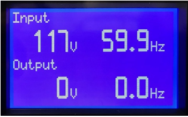
- Output Voltage Setting (based on the Input Voltage Observed from Step 2b):
- From the Main Menu, press the ↓ button to highlight Settings, then press the ⤶ button.
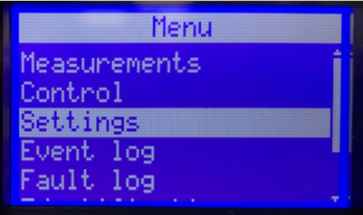
- Press the ↓ button to select In/Out settings, then press the ⤶ button.
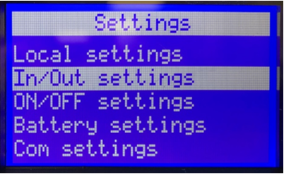
- Output Voltage should be highlighted, press the ⤶ button.
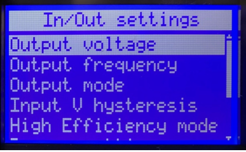
- Press the ↑ or ↓ button until the desired Output Voltage appears (based on the Input Voltage Observed from Step 2b), then press the ⤶ button.
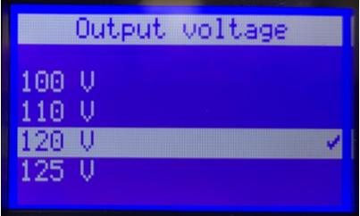
- Bypass Low and High Limit Settings (based on the Output Voltage selected in Step 3d).
- From the Main Menu, press the ↓ button to highlight Settings, then press the ⤶ button.
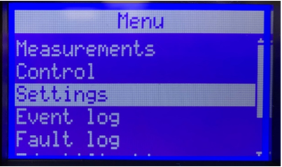
- Press the ↓ button to select In/Out settings, then press the ⤶ button.
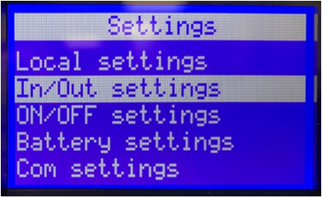
- Press the ↓ button until Bypass settings is highlighted, then press the ⤶ button.
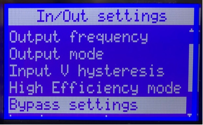
Note—
If the desired low limit is displayed, skip to Step 4e. If not, continue to Step 4d.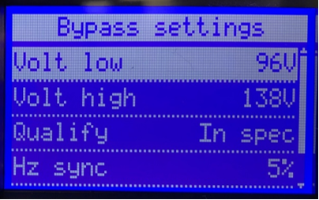
- Press the ↓ button until the desired Low Limit % Setting appears (based on the Input Output Voltage set in Step 3d), then press the ⤶ button.
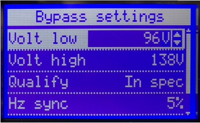
- Press the ↓ button to highlight Volt High appears, then press the ⤶ button.
Note—If the desired high limit is displayed, press the ⤶ button and skip to Step 4g. If not, continue with Step 4f. - Press the ↓ button until the desired High Limit % Setting appears (based on the Input Output Voltage set in Step 3d), then press the ⤶ button.
- Press ESC three times to return to the Main Menu.
 button at the top of the page to send feedback, comments, or change requests.
button at the top of the page to send feedback, comments, or change requests.